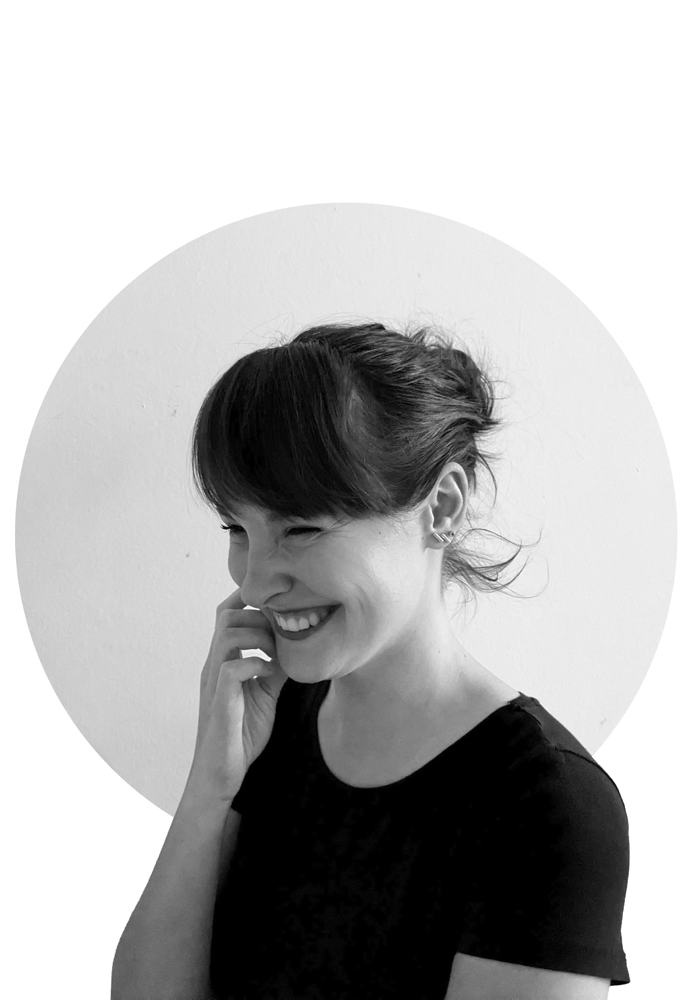

About me
I'm Dori, a UX/UI designer based in Prague.
Since 2023, I've been the solo designer at AristoTelos, completely redesigning a workforce management system across web and mobile platforms — translating complex, enterprise-scale software into interfaces that feel straightforward to use.
Previously I've worked at Loom on the Moon, a Prague animation studio, designing multimedia exhibition concepts for the National Museum in close collaboration with curators and subject matter experts.
I hold a bachelor's degree in Information Design and a master's degree in Digital Arts.
Outside of design work, I lecture on AI, digital literacy, and data privacy at DOX Centre for Contemporary Arts. I also volunteer as a designer, illustrator, and lecturer for STROM, a non-profit educating talented children in mathematics, since the age of fifteen.
In 2026, I designed the concept and served as editor for Letokruhy, a book marking STROM's 50th anniversary.
